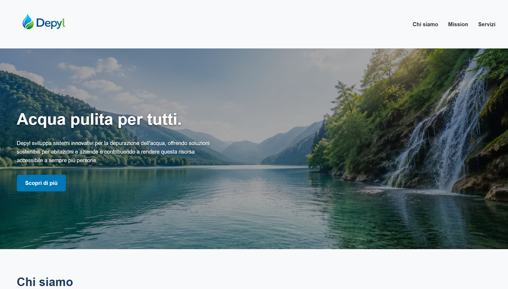

Depyl
Progetto web realizzato durante il percorso di formazione. Il progetto rappresenta una delle prime applicazioni pratiche delle competenze acquisite nello sviluppo web.
HTML
CSS
Visita il progetto